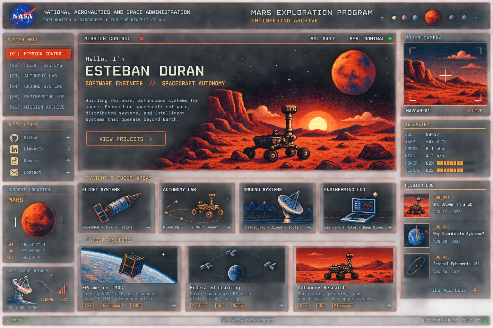

FLIGHT SOFTWARE
Reliable C++ software for embedded and mission-critical environments, with an emphasis on interfaces, state, testing, and deterministic behavior.
WARP // SPEED // CHIC
An engineering archive focused on spacecraft software, autonomy, embedded systems, and distributed space systems.

CORE ENGINEERING DOMAINS
Reliable C++ software for embedded and mission-critical environments, with an emphasis on interfaces, state, testing, and deterministic behavior.
Planning, decision-making, machine learning, and fault-aware behaviors for spacecraft and complex autonomous systems.
Architectures for multiple vehicles and nodes that coordinate, communicate, and operate under constrained links and imperfect information.
MISSION HARDWARE / SOFTWARE / EXPERIMENTS
Exploring a port of NASA's F´ flight software framework to a resource-constrained microcontroller, with an IMU interface as the first sensor path.
Research and engineering around machine learning across multiple spacecraft, including an ML lifecycle and computer-vision experimentation.
A running collection of small simulations and notes for rebuilding the mathematical foundations behind spacecraft motion and guidance.
FIELD NOTES / THEORY / EXPERIMENTS
ECEF, inertial frames, body frames, and the surprisingly important question: “relative to what?”
READ ENTRY →Rebuilding algebra, trigonometry, calculus, and linear algebra one engineering problem at a time.
READ ENTRY →Constraints, failure modes, interfaces, verification, and why reliability changes the way we design.
READ ENTRY →PERSONNEL / RECORD / CONTACT
ENGINEERING PERSONNEL
Senior software engineer working in spacecraft autonomy and mission systems. Interested in distributed spacecraft autonomy.